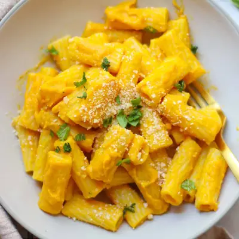

Pumpkin Pasta Sauce

Ingredients
- 8 ounce pasta of choice
- 1/2 cup pasta water
- 1 tablespoons butter
- 1 small onion, diced
- 3 garlic cloves, minced
- 2 tablespoons chopped fresh sage
- 1/2 teaspoon nutmeg
- 15 ounce canned pumpkin
- 1 cup milk of choice
- 1 cup white beans (165g)
- 1/2 cup freshly grated parmesan
- Fresh sage
- Parmesan cheese or cheddar cheese
- A dollop of yogurt or ricotta cheese for extra creaminess
- Chopped walnuts or pecans or pumpkin seeds
Steps
- Melt butter in skillet and saute onion for 4-5 minutes. Add garlic and sage and cook for another minute.
- Meanwhile, cook the pasta according to package instructions.
- Transfer the vegetables to a high-speed blender along with the rest of the ingredients. Blend until smooth.
- Add the drained pasta back into the pan and toss with sauce. thin out as needed.
- Top with more sage, parmesan cheese, and nuts or seeds if desired
Recipe by Min Kwon · Kidfriendly Meals, from MJ and Hungryman. Saved here for personal use; the original has the full notes, tips and photos. Open original